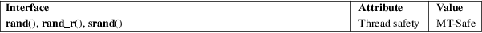

rand, rand_r, srand − pseudo-random number generator
Standard C library (libc, −lc)
#include <stdlib.h>
int
rand(void);
void srand(unsigned int seed);
[[deprecated]] int rand_r(unsigned int *seedp);
Feature Test Macro Requirements for glibc (see feature_test_macros(7)):
rand_r():
Since glibc 2.24:
_POSIX_C_SOURCE >= 199506L
glibc 2.23 and earlier
_POSIX_C_SOURCE
The rand() function returns a pseudo-random integer in the range 0 to RAND_MAX inclusive (i.e., the mathematical range [0, RAND_MAX]).
The srand() function sets its argument as the seed for a new sequence of pseudo-random integers to be returned by rand(). These sequences are repeatable by calling srand() with the same seed value.
If no seed value is provided, the rand() function is automatically seeded with a value of 1.
The function rand() is not reentrant, since it uses hidden state that is modified on each call. This might just be the seed value to be used by the next call, or it might be something more elaborate. In order to get reproducible behavior in a threaded application, this state must be made explicit; this can be done using the reentrant function rand_r().
Like rand(), rand_r() returns a pseudo-random integer in the range [0, RAND_MAX]. The seedp argument is a pointer to an unsigned int that is used to store state between calls. If rand_r() is called with the same initial value for the integer pointed to by seedp, and that value is not modified between calls, then the same pseudo-random sequence will result.
The value pointed to by the seedp argument of rand_r() provides only a very small amount of state, so this function will be a weak pseudo-random generator. Try drand48_r(3) instead.
The rand() and rand_r() functions return a value between 0 and RAND_MAX (inclusive). The srand() function returns no value.
For an explanation of the terms used in this section, see attributes(7).

The versions of rand() and srand() in the Linux C Library use the same random number generator as random(3) and srandom(3), so the lower-order bits should be as random as the higher-order bits. However, on older rand() implementations, and on current implementations on different systems, the lower-order bits are much less random than the higher-order bits. Do not use this function in applications intended to be portable when good randomness is needed. (Use random(3) instead.)
|
rand() |
srand()
C11, POSIX.1-2008.
rand_r()
POSIX.1-2008.
|
rand() |
srand()
SVr4, 4.3BSD, C89, POSIX.1-2001.
rand_r()
POSIX.1-2001. Obsolete in POSIX.1-2008.
POSIX.1-2001 gives the following example of an implementation of rand() and srand(), possibly useful when one needs the same sequence on two different machines.
static unsigned long next = 1;
/* RAND_MAX
assumed to be 32767 */
int myrand(void) {
next = next * 1103515245 + 12345;
return((unsigned)(next/65536) % 32768);
}
void
mysrand(unsigned int seed) {
next = seed;
}
The following program can be used to display the pseudo-random sequence produced by rand() when given a particular seed. When the seed is −1, the program uses a random seed.
#include
<stdio.h>
#include <stdlib.h>
int
main(int argc, char *argv[])
{
int r;
unsigned int seed, nloops;
if (argc != 3)
{
fprintf(stderr, "Usage: %s <seed>
<nloops>\n", argv[0]);
exit(EXIT_FAILURE);
}
seed =
atoi(argv[1]);
nloops = atoi(argv[2]);
if (seed ==
−1) {
seed = arc4random();
printf("seed: %u\n", seed);
}
srand(seed);
for (unsigned int j = 0; j < nloops; j++) {
r = rand();
printf("%d\n", r);
}
exit(EXIT_SUCCESS);
}
drand48(3), random(3)